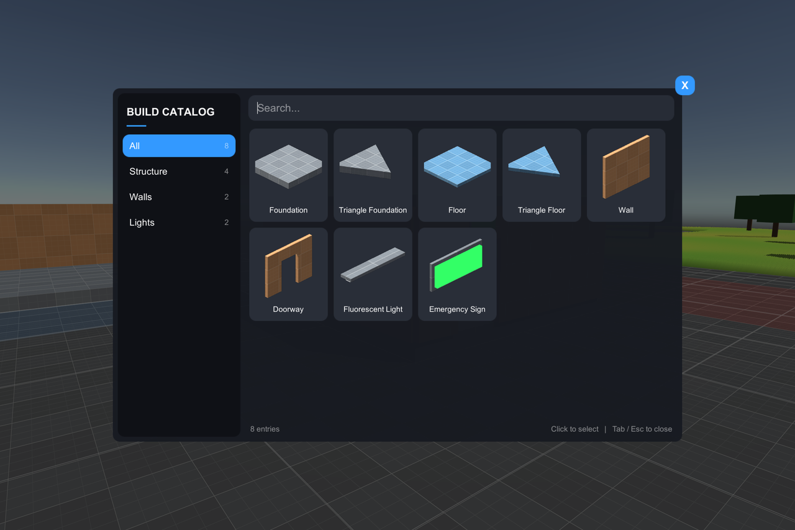
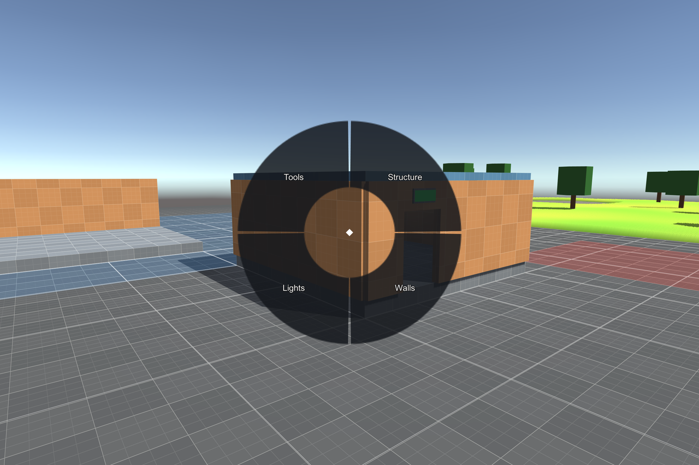
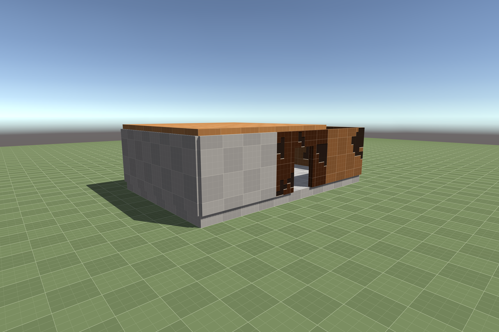

Joinery — Manual
Modular Building System for Unity. Everything lives in the XamSav.Building namespace. Every field in the inspector has a tooltip; this manual explains how the pieces fit together and when to use each one.
Contents
- How it works
- Setting up a scene
- Building Parts
- Sockets
- Grids
- Building Controller, input, views and camera
- Building Manager
- Building Areas and rules
- Terrain
- Menus
- Touch screens
- Scripting
- Performance
- Limitations and troubleshooting
1. How it works
| Concept | Component | What it does |
|---|---|---|
| Part | BuildPiece |
A prefab that can be built: a wall, a floor, a sofa. |
| Socket | BuildSocket |
A point on a part where other parts snap. |
| Controller | BuildingController |
The player's building tool: it shows the preview and places, destroys, moves and upgrades parts. |
| Input | BuildingInput |
Reads the player's actions (Input System) and hands them to the controller. |
| View | BuildingView |
Where the player aims: first person, third person, top-down or orbital. |
| Manager | BuildingManager |
One per scene. It keeps every placed part and runs undo/redo, the grid, grouping, saving and collapse. |
| Area | BuildZone |
A volume where building is allowed or restricted, with optional rules. |
The controller has five modes: None, Placement, Destruction, Adjustment (pick a part up and move it) and Upgrade. Each mode is a state component (PlacementState, DestructionState, AdjustmentState, UpgradeState).
Every action goes through the manager as a command, so it can be undone.
Before an action is allowed, the controller asks two things:
- The part's conditions: components on the part such as Common, Collision, Collapse and Terrain.
- The areas around it: their switches and rules.
When something refuses, the preview turns red and the controller raises ValidationFailed with the reason.
2. Setting up a scene
- Building Manager. Use GameObject > XamSav > Joinery > Components > Create Building Manager.... A scene holds one; the menu is greyed out once it has it.
- Controller. Add
BuildingControllerto the camera, or to the player.BuildingInputcomes with it. When the game starts the controller adds: - any missing mode states; - aFirstPersonBuildingViewif it has no view. - Parts. Fill the controller's Pieces with part prefabs. These are what the mouse wheel cycles through.
- Optional, in any order:
-
BuildCameraon the same camera: fly in first person or switch to top-down with V. - A catalog or radial menu (section 10). -BuildingTouchControlson the camera (section 11). - Areas (section 8). - ABuildBatcheron the camera, for large bases (section 13).
Start Mode on the controller picks the mode at launch. None means the player presses E first.
Default controls
They come from Runtime/Resources/XamSavBuildingInput.inputactions, map Building.
| Action | Keyboard / mouse | Gamepad |
|---|---|---|
| Validate (place, destroy, pick up, drop, upgrade) | Left button | Right trigger |
| Cancel | Right button | B / East |
| Rotate | R | Right shoulder |
| Select next / previous part | Mouse wheel | D-pad left / right |
| Axis lock (move along a straight line while held) | Left Shift | Left trigger |
| Placement / Destruction / Adjustment / Upgrade mode | E / X / T / U | D-pad up / D-pad down / Y (North) / X (West) |
To use your own actions, point the InputActionReference fields of Building Input at your asset. Empty fields use the default asset.
Two more settings on Building Input:
- Block When Pointer Over UI stops a click on a button from also placing a part.
- Enable Direct Controls off: the component no longer switches modes or cycles parts by itself. Use it when your own UI drives everything.
3. Building Parts

Making a part
Select one or more models in the scene and run GameObject > XamSav > Joinery > Components > Create Building Part.... For each model it:
- creates a root object with
BuildPiece(which bringsCommonCondition) andCollisionCondition; - adds a Mesh Collider to every renderer that has no collider, and makes its mesh readable;
- saves a prefab where you choose and adds it to the Building Part Registry.
You can also add BuildPiece to any prefab by hand.
Identity
| Field | Use |
|---|---|
| Piece Id | The key in save files, the registry and the manager's Library. Keep it unique, and do not change it once players have saves. |
| Display Name | Shown in menus. Empty: the prefab name. |
| Description | Optional text for your menus. |
| Category | A free tag such as Walls or Furniture, used by menus, sockets, areas and rules. Spelling and case count. |
| Thumbnail | Icon for menus. Empty: menus render one from the model. Generate Thumbnail... in the inspector saves that render as a sprite and assigns it. |
| Type | A PieceType flag: Foundation, Wall, Floor, Roof, Stairs, Prop, Triangle, WallProp, CeilingProp, TriangleFloor. Sockets and areas filter by it. |
Placement
| Field | Use |
|---|---|
| Free Placement | The part can stand on any surface (snapped to the controller's Grid Size) when no socket is near. Off: it only goes on sockets. |
| Overlap Tolerance | How deep (m) it may sink into another part. |
| Smooth Movement | The preview glides instead of jumping (10–15 feels natural; 0 = instant). |
| Rotation Step | Degrees per rotate press. 0 uses the controller's step. |
| Surface Alignment | Tilts to match the surface (decorations, signs). |
| Force Grounding | Drops to the ground under the aimed point. |
| Use Grid Snapping / Cell Size | Snaps to grid cells and takes Cell Size cells (section 5). |
| Upgrade To | The prefab that replaces it in Upgrade mode, once it has no more variants. |
Conditions
Conditions are components on the part. They decide whether an action is allowed. Each one has Condition Enabled and Show Logs (prints every refusal to the Console).
- Common Condition (always present):
- which modes may touch the part (Allow Placement / Destruction / Adjustment / Upgrade);
- Require Socket: the part must snap, like a window in a wall;
- Ignore Areas: the part skips every area restriction.
- Collision Condition:
- Block Overlapping Parts tests the part's colliders against placed parts. Without this condition, a part does not check overlaps at all.
- Bounds adds boxes that must be free, or that must touch something (Require Contact) or the terrain (Require Terrain). Example: a lamp that must hang from a ceiling.
- Collapse Condition: the part needs support (section 7, Collapse).
- Terrain Condition: refuses terrain that is too steep, terrain layers you list, or spots near trees you list.
To write your own condition, see section 12.
Behaviors
Behaviors react to the part's events: PreviewCreated, Placed, Adjusted, Upgraded, Destroyed.
- Building Animation Behavior maps each event to a curve on scale, position or rotation, or to an Animator state. While it plays, the part counts as busy.
- Building Debris Behavior spawns debris and plays a sound when the part is destroyed. With no prefab it makes chunks from the part's renderers. It can have different debris per variant, and can also fire on collapse.
To write your own behavior, see section 12.
Durability and damage
Building Durability gives a part hit points:
- Max Health: one value per renderer variant, so a stone tier can be sturdier than a wood one. One value covers every variant.
- Damage and repair:
Damage(amount)takes hit points away,Repair()gives them all back (orRepair(amount)some), andSetDamage(value)sets them directly.Health,MaxHealthandDamage01(0 intact, 1 broken) read them. - Destroy When Broken: at 0 the part is destroyed through the Building Manager, so it collapses, throws its debris and can be undone. Off, it stays at 0 until repaired.
- Repair On Upgrade: an upgraded part is built anew, at full health.
- Saving: the damage goes into save files with the part, and comes back with an undo of its destruction.
- Events: On Damaged, On Repaired, On Broken and On Health Changed, for sounds, particles or your own UI. From code,
Changedis raised on every change.
How the damage looks is up to you. Add any mix of these effects next to it, or none, and the part looks the same at any health:
| Effect | What it shows |
|---|---|
| Damage Tint | The part's colour shifts towards Tint, up to Strength. It uses a property block, so materials stay shared. |
| Damage Marks | Marks on the broad faces of each mesh, more of them as the part weakens, in Stages steps. Tiles: square holes on a grid of Tile Size, in clusters; match it to your texture's grid. Sprites: your own sprites (cracks, scorch marks), Mark Size wide, Density per m². Prefabs: your own prefabs, scaled the same way. Every mark stays inside its face, has no collider, is never saved, and is laid out again only when the part stops animating. Marks already shown stay where they are as damage grows; new ones pop open and repaired ones shrink shut over Transition seconds. |
| Damage Model Swap | From a share of damage (From), the part's renderers are hidden and a damaged model is shown in their place. Several steps make several stages. The part keeps its colliders, sockets and Piece Id. |
Every effect has Show From (the damage it starts at) and Hide While Highlighted (a clean preview when a controller aims at the part). To make your own, derive from DamageEffect and override Show(float amount).
Renderer variants
Variants are optional looks of the same part, such as a wood, stone and metal tier, or damage states. Each variant lists:
- the child Objects shown while it is active;
- its Material Sets.
Upgrade mode moves a part to its next variant. After the last variant, it replaces the part with Upgrade To. From code: piece.SetVariant(index, set), or BuildingManager.Upgrade(piece, variant, set), which can be undone.
Presets
A Building Part Preset stores a part's setup: placement settings, conditions, behaviors and, optionally, sockets. You can then apply it to other parts. Use the buttons at the bottom of the Building Part inspector.
Blueprints
A Building Blueprint is a whole structure (a hut, a house, a fence) that the player places in one go, like a single part:
- Making one: select placed parts in the scene (in Edit or Play mode) and use GameObject > XamSav > Joinery > Create Blueprint From Selection.... You can also use Create > XamSav > Joinery > Building Blueprint and fill the list by hand.
- The anchor: the first part, the lowest one when captured. It snaps to sockets or the grid like any part, and the other parts keep their place around it. Rotating the preview turns the whole blueprint.
- Placing: a menu slot with the Blueprint action, or
controller.SelectBlueprint(blueprint)from code. The preview turns red when the anchor cannot stand there, when another part would overlap a placed part, or when a Building Area refuses one of them. - Undo: one Undo removes the whole blueprint.
- Build Mode: how the parts go up once it is placed.
- Instant: all at once.
- Sequential: one after another, every Part Interval seconds, on their own.
- Planned: only a plan is laid out. Your game builds each part with
site.BuildNext(), for example when the player pays for it.
With Sequential and Planned, the placed blueprint becomes a Blueprint Site. The parts still to build show as a translucent blue plan (BlueprintSite.PlanColor). Parts go up bottom first. A part that something blocks waits: CanBuildNext(out reason) says why. A part of an unfinished site that gets destroyed goes back to the plan. One Undo takes the whole site down; with Planned, each BuildNext is undone on its own. Unfinished sites are saved and loaded with the Building Manager's save. Sequential sites need a Building Manager in the scene.
- Missing prefabs: each part stores its prefab and its Piece Id. With no prefab, the Library and the Building Part Registry are used. Parts still missing are left out.
- Player blueprints: players can save what they built and place it again in later sessions.
BuildingBlueprintStorage.SaveNew(parts)writes one JSON file per blueprint toApplication.persistentDataPath/Blueprints(change it withFolder).Alllists them,IsSaved(blueprint)tells a saved one from an asset, andDelete(name)orDelete(blueprint)removes one. Files keep only Piece Ids, so every part must be in the Library or the Building Part Registry. - In the menus: set a menu's Saved Blueprints Category to a name and the saved blueprints show up there, as the last category. The list updates when one is saved or deleted.
The main demo has three in the Blueprints category of its menus (Demo/Blueprints):
- Hut: Sequential.
- Small House: Instant.
- Small House Plan: Planned; aim at its plan and press N to build the next part. Aim at a structure and press B to save it; it appears under My Blueprints. Pick one there and press Delete twice to remove it (the first press asks). On touch screens, the Save Blueprint and Delete Blueprint buttons do the same.
Building Part Registry
The registry is one asset at Assets/Resources/XamSavBuildingPartRegistry.asset. It is created when needed and lists every part in the project. The manager uses it to rebuild a part from its Piece Id (undo, loading) when the part is not in its Library. Prefabs with BuildPiece join it automatically. Tools > XamSav > Joinery > Refresh Building Part Registry rebuilds it.
4. Sockets
A BuildSocket is a child of a part, placed where another part should attach. Its forward axis is the direction the attached part faces. Create one with GameObject > XamSav > Joinery > Components > Create Building Socket...; the editor shows handles to place it.
| Field | Use |
|---|---|
| Snapping Points | What fits here, checked in order; the first match wins. Each point matches by Category (recommended), Reference (one prefab) or Type (piece types), and adds a position, rotation and scale offset. |
| Accepts | Piece types that fit, used only while there are no snapping points. |
| Priority | Which socket wins when several are in reach. |
| Radius | How near the aim must be. 0 uses the view's Snap Radius. |
When the player aims, the controller looks at the sockets near the aimed point. The highest priority wins, then the nearest, then the best facing. A socket is skipped when:
- it is more than Snap Max Angle away from the ray;
- Snap Obstruction Check is on in the view and something blocks it;
- the socket is off, or its part is a preview, is being moved or is being destroyed.
A socket does not know whether something already stands on it. A second part on the same socket is stopped by its Collision Condition, because the two overlap.
Sockets do not have to belong to a part: a loose socket in the scene (a mounting point) works too.
5. Grids
Turn on Building Manager > Grid Settings > Enable Grid to get a world grid of Size cells, each Cell Size metres, centred on the manager. Parts with Use Grid Snapping then snap to cells and take Cell Size cells of the grid; occupied cells refuse other parts.
- Build Grid components are local grids with their own cell size. Inside their box they take over from the world grid.
- Appearance:
- Grid Material can be edited inline; the default is
XamSavGridMaterial. - Show Occupied Footprints shades the cells parts take, and Show Placement Footprint shades the cells under the preview.
- Grid Visibility By Mode sets in which modes the grid shows.
- Follow:
SetFollowTarget(transform, true)moves the grid with the player, one whole cell at a time. Use it for endless worlds. - From code (
BuildingManager.Instance.GridSystem): GetCell(x, y)orGetCell(worldPosition)returns the cell, whether it is occupied and the part on it;SetGridVisualsVisible(bool)shows or hides the grid;RefreshGrid()redraws it.
6. Building Controller, input, views and camera
Controller
| Field | Use |
|---|---|
| Pieces | The parts the select action cycles through. Menus replace it with their category. |
| Views | Where the player aims. The first one starts active; switch with SetView. |
| Start Mode | Mode at launch. |
| Grid Size | Snapping step for free placement (0 = none). |
| Rotation Step | Default degrees per rotate press. |
| Allow Outside Zones | Off: building only works inside a Building Area. |
| Valid / Invalid / Adjust Color, Upgrade Tint | Preview colours. |
Each state component has two settings:
- Cancel State After Validation: leave the mode after one action. Handy for destruction and upgrade.
- Show Logs: print refusals to the Console.
Views
All views share the ray settings: Raycast Distance, Raycast Layer, Raycast Offset, the valid-distance limits, Snap Radius, Snap Max Angle and Snap Obstruction Check.
- First Person: the ray goes from the centre of the screen, or along Origin Transform if you set one.
- Third Person: the ray goes along the camera's forward, starting at the camera shifted by Raycast Offset. Push the offset's Z forward so the ray starts past the character.
- Top Down: the ray goes through the cursor or finger. Distance is measured on the ground from Distance Origin.
- Orbital: the ray goes through the cursor, for an orbiting camera.
Build Camera
BuildCamera is a ready-made camera for prototypes and the demos. It has two modes:
- First Person: WASD to move, Space / Ctrl to go up and down, the mouse to look.
- Top-Down: WASD to pan, the middle mouse button to rotate, the wheel to zoom.
V switches between them, and the camera tells the controller which view to use. In your own game you will usually keep your own camera and add a view to it.
7. Building Manager
Commands and undo
Placing, destroying, moving and upgrading are commands. Undo() and Redo() walk back through the last History Size of them; ClearHistory() empties the list.
The same actions are available from code as static methods: BuildingManager.Place, DestroyPiece, Move and Upgrade (section 12).
Library lists the prefabs the manager can rebuild by Piece Id. Parts not in it are looked up in the registry.
Grouping
Grouping Settings > Enable Grouping collects touching parts into structures (BuildGroup). A structure splits when a part in the middle goes.
| Setting | Use |
|---|---|
| Neighbor Distance | How near two parts must be to share a structure. |
| Default Pivot Mode | Where a group's pivot goes: Center, Ground, Group Transform or First Part. |
| Dont Destroy Group | Keep a group's object when its last part goes. |
| Parent Pieces | Put each structure's parts under its own object in the Hierarchy. |
GroupingSystem.GroupOf(piece) returns a part's structure. Groups with a Rigidbody are recentred every frame.
Saving
Save Settings > Enable Saving. Each scene gets its own slot (File Name plus the scene name), and a save refuses to load into another scene.
- Save Mode:
- Automatic loads on Start and saves when the game ends (on mobile, also when the app is paused). Auto Save adds a save every Auto Save Interval seconds.
- Manual: call
Save()andLoad()yourself. - Storage:
- PlayerPrefs;
- Local File Data, in
Application.dataPath(handy in the Editor); - Local File Persistent, in
Application.persistentDataPath(use this in builds). - File storages keep a
.bakcopy and fall back to it if the main file is damaged. - What is saved for each part: position, rotation, scale, the socket it sits on, its variant and your own data (section 12).
Collapse
Give a part a Collapse Condition and it needs support.
- Placing: it is refused where nothing would hold it (Require Support To Place).
- Once placed: when a part loses every chain of touching parts down to the ground, it falls as a Rigidbody for Fall Time and disappears. Fall Push and Fall Spin give each falling part a random push and spin, so a structure comes apart as it falls instead of dropping in one block (0 drops it straight down).
- Support Type sets what holds a part up: any collider, other parts only, or parts of the Support Categories.
- A part without this condition never falls, and holds up what rests on it, like the ground.
The physics settings on the manager turn collapse on and off and set Debris Lifetime.
8. Building Areas and rules

Create one with GameObject > XamSav > Joinery > Components > Create Building Area....
| Field | Use |
|---|---|
| Global | Its rules apply to the whole scene (no volume). |
| Shape | Bounds (an axis-aligned box), Sphere, or Collider (the object's collider). |
| Inclusion Mode | Partial: the area takes a part as soon as any of it is inside. Full: the whole part must be inside. |
| Priority | Where areas overlap, the highest one decides. Ties: all of them. |
| Allow Placing / Allow Demolishing / Allowed Types | Quick switches. |
| Area Type | A label for your own scripts. Nothing in the package reads it. |
Areas test the part's real shape (its colliders and condition boxes), not just a bounding box. Global areas are checked first, then the area with the highest priority that holds the part. With Allow Outside Zones off on the controller, nothing can be built outside every area.
Rules
Add rules as components on the area; each has Rule Enabled. Rules do not apply in Upgrade mode.
- Height Restriction: a minimum and maximum height for placing, destroying and moving.
- Category Restriction: which categories may be placed, destroyed or moved here.
- Capacity Restriction: the most parts the area holds, in total or per category.
- Proximity Restriction: keeps parts apart (Min Distance) or together (Max Distance), optionally counting only some categories.
To write your own rule, see section 12.
9. Terrain
Add Build Terrain to a Terrain.
- Blocked Layers: no building where one of these terrain layers is the main texture.
- Clear Grass: parts flatten the grass under them, plus Grass Margin.
- Tree Rule: trees either Block parts within Tree Radius, or are Removed by them.
- Restore On Demolish: grass and trees come back when the part goes.
- Protect Asset: in Play mode the component works on a copy of the TerrainData, so your asset is never changed.
For rules on a single part (slope, layers, trees), use its Terrain Condition instead.
10. Menus

There are two menus. Create them from GameObject > XamSav > Joinery > UI:
- Build Catalog: a window with categories, a search box and tiles.
- Radial Menu: a ring of categories, then of parts.
Both menus share the same settings:
- Controller: empty means the controller on the same object, else the first one in the scene.
- Categories and slots: each slot has a name, a description, an icon and an action.
- Selection: pick a part.
- Mode: switch build mode.
- Upgrade: switch to a given variant.
- Blueprint: place a Building Blueprint (section 3).
- Category Selection: open a category.
- Custom Invoke: call a UnityEvent.
- Menu: with no categories, the menu fills itself from a Build Menu asset (Create > XamSav > Joinery > Build Menu).
- Open Key / Toggle Action: what opens and closes the menu.
Building Collections (Create > XamSav > Joinery > Building Collection) are lists of parts. The Building Input inspector can copy one into its Custom Part References.
Changing the look
The menus and the touch controls are ordinary uGUI prefabs in Runtime/Resources:
XamSavBuildCatalogXamSavRadialMenuXamSavTouchControls
To restyle one, duplicate the prefab, edit it and put the copy in the component's UI Prefab field. The menu clones its templates (category item, tile, segment) at runtime, so style the templates. Do not edit the originals: Tools > XamSav > Joinery > Rebuild Menu UI Prefabs overwrites them.
11. Touch screens
Add Building Touch Controls to the object with the Building Controller. With Visibility = Auto, the controls show only on devices with a touchscreen. They give you:
- Confirm, labelled with the current action (Place, Destroy...), plus Cancel and Rotate;
- one button per mode, and Parts, which opens the catalog (or the radial menu);
- a joystick that appears where the thumb lands, and Up / Down to fly in first person, both used by the Build Camera;
- Save Blueprint and Delete Blueprint, when a menu has a Saved Blueprints Category (section 3, Blueprints).
Hide Unused Buttons (on by default) shows only the buttons that do something right now:
- Cancel only while carrying a part;
- Rotate while placing or carrying;
- Upgrade only if some part can be upgraded;
- Save Blueprint while aiming at a placed part (not while placing);
- Delete Blueprint while a saved blueprint is selected. The first tap only asks (Tap again to delete); a second tap within Delete Confirm Time (3 s) deletes. Set it to 0 to delete at once.
Tap To Validate lets a quick tap on the scene confirm, without the button.
Gestures with the Build Camera:
- First person: one finger looks around.
- Top-down: two fingers pan, pinch to zoom, twist to rotate.
Fingers that start on a button never move the aim or the camera. The radial menu works with a finger too: lift to choose, lift in the centre to go back.
12. Scripting
Events
using XamSav.Building;
controller.Placed += part => Debug.Log("Placed " + part.DisplayName);
controller.ValidationFailed += (mode, reason) => ShowMessage(reason);
controller.ModeChanged += mode => UpdateHud(mode);
BuildingManager.PieceRegistered += part => { /* every new part, by any route */ };
BuildingManager.PieceCollapsed += part => { /* lost its support */ };
The controller also raises Demolished, PickedUp, Dropped, ViewChanged and PartSelected. The manager also raises PieceUnregistered and PieceMoved. Each part raises BuildingEventRaised(part, event) and StateChanged.
Driving the controller
controller.SetMode(BuildMode.Placement);
controller.SelectPart(wallPrefab);
controller.ValidateAction(); // same as a click: place, destroy, pick up / drop, upgrade
controller.CancelAction();
controller.RotateAction();
Building from code (undoable)
var wall = BuildingManager.Place(wallPrefab, new Pose(position, rotation));
BuildingManager.Move(wall, new Pose(position, rotation), new Pose(newPosition, rotation));
BuildingManager.Upgrade(wall); // next variant, or Upgrade To
BuildingManager.DestroyPiece(wall);
BuildingManager.Instance.Undo();
// Blueprints: save what the player built, then place it again in one go
controller.SaveAimedStructure(); // the structure under the aim, to a file
// Building part by part (Build Mode Planned): charge for each part, then build it
var site = BlueprintSite.At(aimPoint); // or controller.LastSite, or BlueprintSite.Sites
if (site != null && site.CanBuildNext(out var reason) && inventory.TrySpend(site.NextPart)) // inventory: your own
site.BuildNext(); // undoable; site.IsComplete when every part stands
BlueprintSite.SiteCompleted += s => Debug.Log(s.Blueprint.DisplayName + " finished");
controller.DeleteSelectedBlueprint(); // the saved blueprint selected for placement
var group = BuildingManager.Instance.GroupingSystem.GroupOf(wall); // the structure the wall is part of
var blueprint = BuildingBlueprintStorage.SaveNew(group.Pieces, "My base"); // to a file; listed in the menus
controller.SelectBlueprint(blueprint); // the player places it in Placement mode
BuildingManager.Execute(new BlueprintCommand(blueprint, new Pose(position, rotation))); // or place it directly
Saving your own data
public class Chest : MonoBehaviour
{
public int coins;
void Awake()
{
var part = GetComponent<BuildPiece>();
part.SaveCallback += data => data.SetInt("coins", coins);
part.LoadCallback += data => coins = data.GetInt("coins");
}
}
PieceStateData stores strings, ints, floats, bools and Vector3s. The same callbacks run when an undo brings a destroyed or collapsed part back: SaveCallback when it goes, LoadCallback on the new copy before its behaviors hear Placed.
A custom condition
public class DaylightCondition : BuildingCondition
{
protected override ConditionResult Check(in ConditionContext context) =>
context.mode == BuildMode.Placement && IsNight()
? ConditionResult.Fail("You cannot build at night")
: ConditionResult.Valid;
}
ConditionContext carries:
- the mode and the controller;
- the prefab and the preview instance;
- the pose (
hasPose,pose) and the socket.
Override EvaluationOrder to run before or after the built-in conditions.
A custom area rule
public class NoRoofsRule : BuildingRule
{
protected override ConditionResult Check(in AreaRuleContext context) =>
context.part != null && context.part.type == PieceType.Roof
? ConditionResult.Fail("No roofs in " + context.area.name)
: ConditionResult.Valid;
}
A custom behavior
public class PlaceSound : BuildingBehavior
{
public AudioClip clip;
protected override void OnBuildingEvent(BuildingEvent buildingEvent, BuildPiece part)
{
if (buildingEvent == BuildingEvent.Placed) AudioSource.PlayClipAtPoint(clip, part.transform.position);
}
}
A custom state
Derive from BuildingState, override EnterState, UpdateState, ExitState and the On...Action methods, and add the component next to the controller.
Example: Survival

Demo/Survival/Survival.unity puts the extension points above to work in a small survival loop: build a base, see it take damage, repair it and upgrade it. Regenerate it with Tools > XamSav > Joinery > Regenerate Survival Demo; its parts are the main demo's foundation, wall, doorway and floor, remade under Demo/Survival/Prefabs with their own Piece Ids.
| Piece | Extension point | What it does |
|---|---|---|
| Wood and Stone looks | Renderer variants | Every part has a Wood (0) and a Stone (1) variant on the same meshes. U upgrades through them; upgradeTo is left empty. |
| Durability | BuildingDurability, DamageTint, DamageMarks (section 3, Durability and damage) |
Hit points per variant (wood 100, stone 250). A damaged part darkens and loses tiles of the 0.25 m grid its material draws (Damage Marks, style Tiles). |
PartEffects |
BuildingDurability.onDamaged, onRepaired, BuildingEvent.Upgraded |
Bursts of small blocks: splinters on a hit, light blocks rising on a repair, a swirl of the new material on an upgrade. An example of hooking your own effects to durability and building events. Plain cubes moved in code, so no particle module is needed. |
RepairFirstCondition |
BuildingCondition |
Refuses Upgrade, and picking a part up in Adjustment, while the part is damaged: "Repair it first (66/100 HP)". Dropping a carried part is never refused, because it is only checked while there is no pose. |
SurvivalPlayer |
BuildingController.ActiveView, BuildingManager.Pieces |
F strikes the aimed part, H repairs it, and a storm hits a few random parts every 45 s. Shows the aimed part's health and the storm timer. DemoPlayer stays next to it for the mode help, undo and F5 / F9 saving. |
The demo has no resources or crafting. To charge for parts, add a condition that checks the player's stock in Placement and Upgrade. Then add a behavior that spends it on Placed and Upgraded and refunds it on Destroyed. Loading a save raises Placed too, so skip the charge while Load runs.
13. Performance
The package is tested with a few thousand parts.
- Parts, sockets and areas are kept in registries with spatial lookups, so aiming and validation do not scan the whole scene.
- Build Batcher (on the controller's object) merges placed parts into chunks of Chunk Size metres, which cuts draw calls. A chunk is rebuilt when a part in it changes.
- Keep part colliders simple (boxes beat mesh colliders) and give sockets a sensible Radius.
- Turn off what you do not use: the grid, grouping and collapse are all optional.
14. Limitations and troubleshooting
Not supported:
- HDRP.
- The old Input Manager (Input System only).
- VR / XR controllers.
- Multiplayer. The commands run locally; networking is up to you.
The preview is always red. Turn on Show Logs on the part's conditions and on the controller's states: the Console gives the reason. Common causes:
- the part overlaps something (lower Overlap Tolerance on the neighbour, or check the collider layers);
- Require Socket is on;
- the spot is outside every area while Allow Outside Zones is off;
- a Collapse Condition finds no support.
Parts do not snap.
- Check the socket's snapping points (category spelling and case) and its Radius.
- Check the view's Snap Max Angle.
- If the part has neither Free Placement nor a matching socket, it cannot go anywhere.
A loaded save is missing parts. The manager rebuilds parts by Piece Id. Make sure every part is in the manager's Library or in the registry, and that its Piece Id has not changed.
Clicking a button also places a part. Keep Block When Pointer Over UI on, and make sure the scene has an EventSystem. Menus create one if it is missing.
Jagged shadows. Shadows come from your render pipeline's settings, not from the package. In your URP asset, turn on Soft Shadows, use 4 cascades, and use a Main Light shadow resolution of 4096. Keep the shadow distance no longer than you need: the screenshots used 60 m.
Pink materials. Your project uses a different render pipeline from the demo materials. Convert them with Unity's Render Pipeline Converter, or assign your own materials.